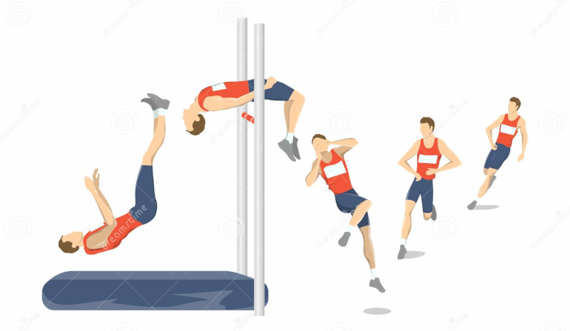
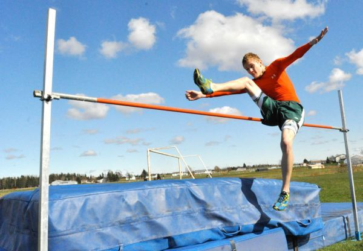
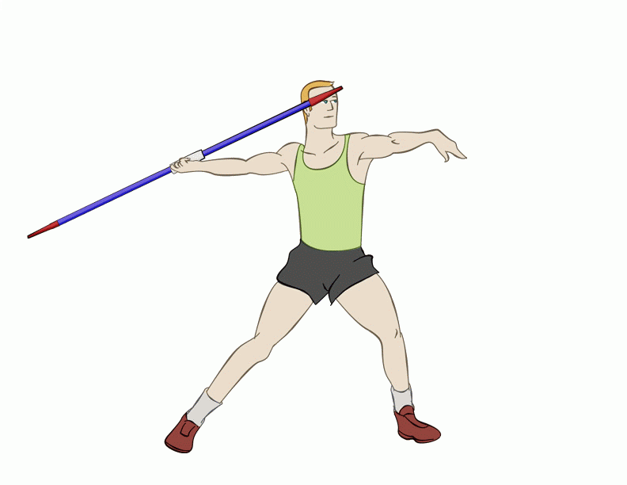
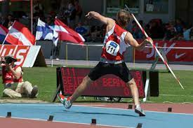
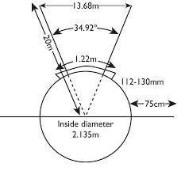

High Jump
The high jump is a field event in which competitors must jump unaided over a horizontal bar placed at measured heights without dislodging it. The two main considerations are the lift and clearance.
Safety Instructions
- Ensure proper spacing during drills and practice.
- Wear appropriate physical education attire during the activity.
- Follow the teacher's instructions during practice.
- Ensure the runway is free from obstacles.
- Use a flat ground.
- Jump one learner at a time.
- Perform warm-up adequately before participating in the activity.
Warm-up Activities
-
Jumping Jacks
Stand with your legs shoulder-width apart, knees slightly bent, and hands on the sides. Jump and open your arms and legs out to the sides, with arms above the head and legs wider than shoulder-width. Close your arms and legs back to your sides, returning to the start. Repeat several times.
-
Skip and Skip
Move while stepping from one foot to the other with a hop. Raise your arm opposite the moving foot alternatively.
-
Press-ups
Place your hands on the ground face down, extend your legs back, and balance on your hands and toes. Keep your body straight, bend your elbows, and lower yourself until your elbows are at a 90-degree angle. Push back up through your hands to the start position.
-
Wind Break
Pretend to be in a windstorm, with wind blowing your arms as branches. Start while the wind is strong and finish as the wind calms.
Facility and Equipment
The facility used in the high jump is a space where a runway is marked. There is a landing area where suitable material for landing is placed, such as sawdust or landing mattresses. The equipment includes a crossbar, uprights, and a tape measure.
Rules for Practice
- Do not touch the ground beyond the plane of the upright and the landing area before the crossbar.
- Take off should be on one foot.
- Do not dislodge the bar to master the take-off points.
Styles of High Jump
- The scissors
- Straddle
- Fosbury flop
- Western roll
Scissor Technique in High Jump
This is a method of clearing the bar in the high jump. It involves the legs making a crossing action over the crossbar during flight. The crisscrossing is what gives the technique its name "scissors."
Learning Points on the Scissor Technique
- The Approach: Approach the bar at a comfortable speed.
- The Take-off: Hold your shoulders high and flex the take-off leg to launch you into the air.
- The Flight: Hold the leg nearer the bar straight and swing it into the air to clear the bar. Once your lead leg is over the bar, kick the other foot to clear the bar.
- Landing: Land on your feet to complete the jump.
Cool-down Activity
- Stretch and Spell
Use body stretches to spell the word "scissor" one letter at a time. Wait for a few seconds before spelling a different letter.
Standing Javelin
The javelin throw is a field event where a spear-shaped implement, about 2.5 meters in length, is thrown.
Equipment and Sector
The javelin has several parts:
- Metal Head: The part with the metal tip.
- Metal Tip: Made of metal, it determines the exact measurement once the javelin has landed.
- Chord Grip: Covers a section of the shaft and is the part held by the thrower.
- The Tail: The part of the javelin that trails it as the implement is thrown.
- The Shaft: Makes the largest part of the javelin. The chord grip is within the shaft.

The javelin throw facility includes a runway, a throwing arc, and a landing sector.
Safety Instructions
- Ensure proper spacing during drills and practice.
- Wear appropriate physical education attire during the activity.
- Follow the teacher's instructions during practice.
- Do not stand in the way of the javelin or where it is landing.
- Carry the implements back after a throw.
- Perform warm-up adequately before participating in the activity.
Warm-up Activities
-
Jumping Jacks
Stand with your legs shoulder-width apart, knees slightly bent, and hands on the sides. Jump and open your arms and legs out to the sides, with arms above the head and legs wider than shoulder-width. Close your arms and legs back to your sides, returning to the start. Repeat several times.
-
Ankle Circles
Stand with feet hip-width apart and your arms to the sides. Shift your weight to the right leg and point your toes down into the ground. Start rotating your left foot, making small circles with your ankles. Repeat the exercise with your right foot.
-
Shoulder Rotation
Stand tall with your arms by your sides. Swing your arms forward until they are as high as you can go, without raising your shoulders. Return your arms to the starting position and repeat the action.
Cool-down Activity
- Climb the Staircase
Pretend to be climbing a staircase. Stretch your knees and arms.
Throw in Standing Javelin
Proper technique requires the athlete to hold the javelin with only one hand on the chord grip. The javelin must be thrown with an over-the-shoulder motion. The competitor can't turn their back to the throwing area until the javelin is airborne.
Skills in Standing Javelin
- The stance
- Grip
- Release
- Recovery technique
Safety Instructions for Using the Real Implement
- Always carry the javelin vertically with the point down.
- Be aware that the tail is as potentially dangerous as the tip.
- Never run to collect a javelin.
- Take care when removing the javelin from the ground. Check that the area around is clear before doing so.
- When the javelins are not in use, they should be firmly stuck into the ground in a vertical position.
Phases in the Standing Javelin (Learning Points)
-
The Stance
Stand with feet flexed, the foot opposite the throwing hand slightly forward. Toes of the feet should point in the direction of the throw.
-
The Grip
Grip the javelin such that it lies along the palm of the hand, which is turned upwards. Hold it firmly in a relaxed way without applying tension in the forearm. Grip the javelin by bringing the thumb and the first two joints of the index finger behind the chord. The index finger supports the shaft.
-
The Finish Grip
This is a method of gripping the javelin where the middle finger rests closer to the top of the chord, and the index finger wraps higher along the shaft.
-
Recovery
The athlete will try to balance to avoid falling.
Measuring the Distance
Measure the distance by starting from where the tip of the javelin first strikes the ground. The zero tape measure goes out to where the javelin tip strikes the ground.
Shot Put
The shot put is a field event. The action of throwing the shot is called "putting." It involves putting a weighted ball for distance. The athlete competes for the distance thrown. The implement is made of solid iron or brass.
The Shot Put Sector
A shot put sector features a throwing circle, from which an athlete puts the shot, and a throwing sector which is triangle in shape. The circle has a diameter of 2.15 meters. The throwing sector measures 1.68 at its widest and 20 meters.
Throwing Styles
- Standing style
- O'Brien style
Standing Shot Put
Safety Instructions
- Do not throw the shot until the teacher gives you permission to do so.
- Do not retrieve the shot until the teacher gives you permission to do so.
- Wear appropriate attire.
Warm-up Activity
-
Mountain Climbers
Put both hands and knees on the floor. Place your right foot near your right hand and extend your left leg behind you. In one smooth motion, switch your legs, keeping your arms in the same position.
-
Side Reach
Stand with feet wider than shoulder-width apart. Lean your body to the right side and bend your right knee slightly. Stretch your left arm upwards in line with your body. Repeat on the opposite side.
-
Arm Circles
Stand with your feet shoulder-width apart and extend your arms parallel to your floor. Circle your arms forward using small controlled motions, gradually making the circles bigger. Reverse the direction of the circles after about 10 seconds.
Cool-down Activity
- Heel and Toe
Walk in circles on your heels for 20 seconds. Walk in circles on your tiptoes for 20 seconds.
O'Brien Shot Put
Safety Instructions
- Ensure proper spacing during drills and practice.
- Wear appropriate physical education attire during the activity.
- Follow the teacher's instructions during practice.
- Put the shot towards one end.
- Do not stand on the side where the shot is landing.
- Carry the implement back.
- Perform warm-up adequately before participating in the activity.
Warm-up Activities
-
Back Pedaling
Run backwards with short, quick steps, pumping your arms and landing on the balls of your feet. Keep your chest up and take as many steps as possible.
-
Plank Walk Out
Start in a standing position. Bend forward until you touch the ground with your hands. Slowly walk your hands forward as far as you can. Pause, then walk your hands back towards your feet. Repeat several times.
-
Arm Swings
Hold your arms out to the side. Swing them and cross them in front of your chest.
Cool-down Activity
- Walking
Slowly walk within the marked area.
Learning Points
-
Stance and Grip
-
Stance:
Stand with the feet shoulder-width apart, parallel to the target, holding the shot.
-
Grip:
Hold the shot with the base of the fingers, spreading the fingers slightly apart, and the thumb used for support. The hand should be bent back in a cocked position, holding the shot. The elbow should be held up to the side, away from the body. The thumbs should be pointing down, palms facing outwards, and the fingers behind the shot (elbows up, thumbs down, palms out position).
-
Stance:
-
Release and Recovery
-
Release:
Stand with the feet parallel to the target. Place the shot under the jaw and against the neck. Extend the non-putting arm towards the target. Release the shot.
-
Recovery:
Extend the wrist to flick the shot off the fingers as it leaves the hand for recovery.
-
Release:
Implement Weights
| Implement | U13 | U15 | U17 | Junior Men | Senior Men | U13 | U15 | U17 | Junior Women | Senior Women |
|---|---|---|---|---|---|---|---|---|---|---|
| Shot Put | 3kg | 4kg | 5kg | 6kg | 7.26kg | 2.72kg | 3kg | 3kg | 4kg | 4kg |
| Discus | ||||||||||
| Hammer | ||||||||||
| Javelin | 400g | 600g | 700g | 800g | 800g | 400g | 500g | 500g | 600g | 600g |